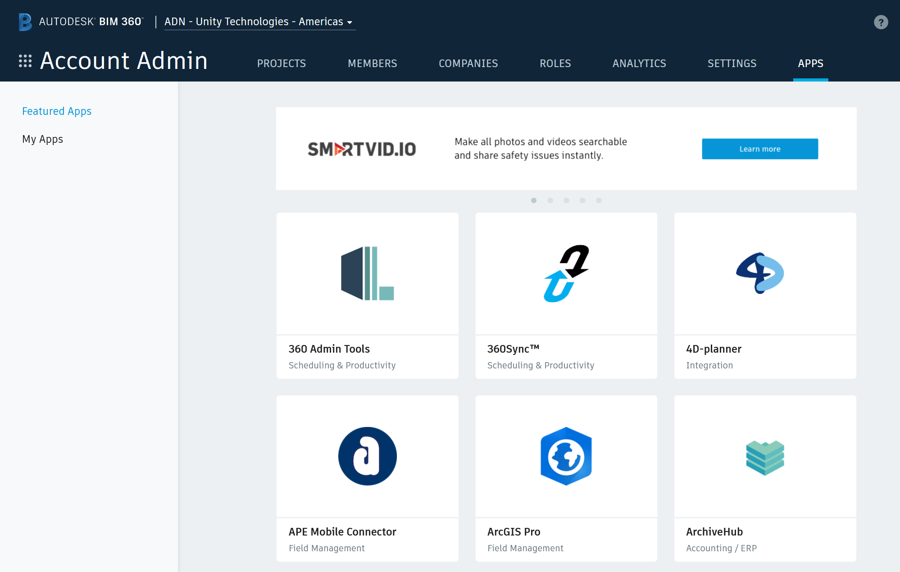
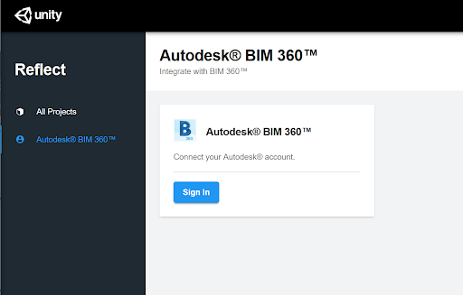
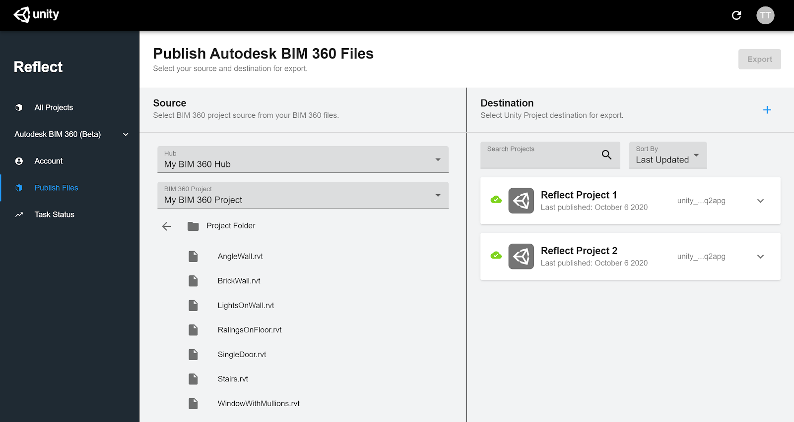
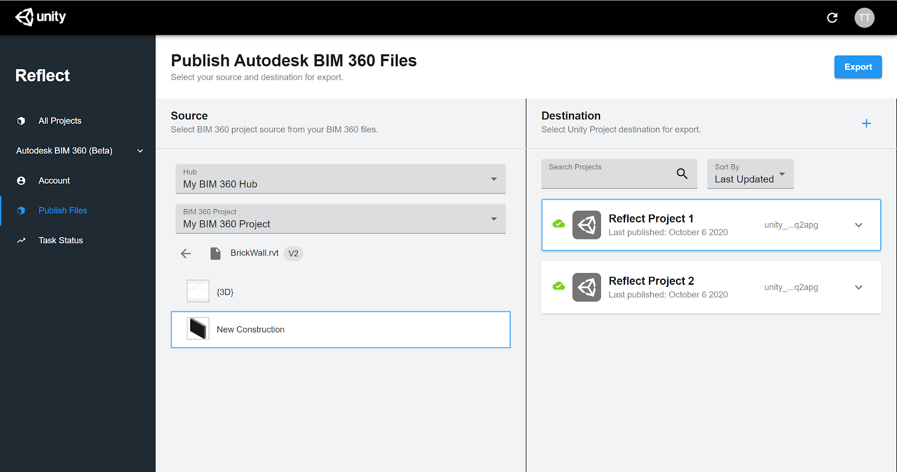

The BIM 360 plugin for Reflect
Authorizing the plugin
Getting started
The app allows Unity Reflect to access your Autodesk BIM 360 files. Before you can install the plugin, you need to link Unity Reflect to your Autodesk BIM 360 account.
Note: You must be a BIM 360 account administrator to continue.
Go to the Account Admin page (https://apps.b360.autodesk.com/) and select your account. 
In the left panel, click My Apps.
- Click Add Applications > Unity Reflect > Add to BIM 360 > Authorize.
- Click Open to open Reflect and sign in to your Unity account.
In the sidebar, click Autodesk BIM 360.

Click Sign In > Allow.
Unity Reflect has access to your BIM 360 files.
Using the plugin
To use the BIM 360 plugin, go to the Unity Reflect Dashboard and navigate to Autodesk BIM 360 in the sidebar.
Export BIM 360 files to Reflect
- From the Unity Reflect Dashboard, navigate to Autodesk BIM 360 > Publish Files in the sidebar.
In the Source column, select a BIM 360 Hub and Project.

Navigate to your desired file and select a 3D View to export.
In the Destination column, select a Unity Reflect Project as the export destination.

Note: If you need to create a new Project, click + and enter the Project name and organization.
Click the Export button.
To monitor your export, navigate to Task Status in the sidebar.
If you already have Reflect installed, completed exports appear in the Reflect Viewer.
If you don’t have Reflect, install Unity Reflect or the standalone Unity Reflect Viewer to see your completed exports. The Unity Reflect Viewer is also available on iOS and Android.